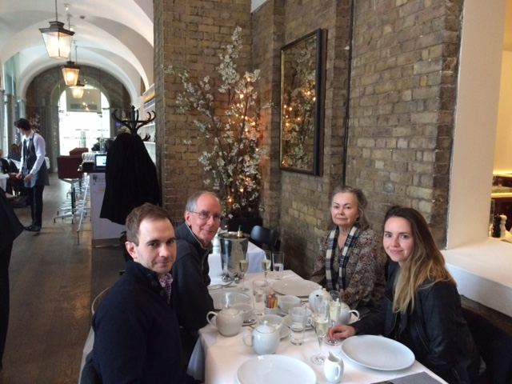

Professional Website for Andrew West

EMAIL: westaa@colorado.edu
CELL: (913)207-9031
I recently graduated from Galvanize's full-stack immersive program and I am seeking employment as a junior web-developer. The program was expansive, covering JavaScript frameworks and libraries across the stack, and I am eager to gain mastery of front-end programming languages such as AngularJS and ECMAScript 6. I am proficient using the NEAP (Node Express Angular PostgresQL) stack, but I feel that my strengths are in AngularJS and vanilla JavaScript. Please contact me to if you would like to obtain references, discuss employment, or simply discuss web development.
Preferred Technologies: HTML5, CSS, SASS, Bootstrap, Javascript, jQuery, AngularJS, node.js, express.js, knex.js, PostgresQL
Additional Skills: website deployment (Heroku, Firebase, Pivotal), github, Branch Workflow Management, Pivotal Tracker, project management, collaboration, marketing
Individual and Team Projects:
Fantasy Forecast
Technologies: NEAP stack, Fantasy Football Nerd API, Yahoo Sports API
Fantasy Forecast is a full stack web application I developed as my Capstone project at Galvanize.
It is a website that allows fantasy football players to build a roster, analyze their roster, and obtain projections from a number of different sources. Many sports analytics websites including Fantasy Football Nerd and ESPN publish weekly projections for NFL players based on complex statistical models the average player does not have access to. My website allows the average player to get all of these projections in one website and use these projections to build a lineup which gives them highest probability of winning their weekly matchup.
Trend-Based Sports Analytics
Technologies: HTML, CSS, D3 Graphs
For my first quarter project at Galvanize, I developed a website which allows users to graph an NBA team's point spread across all eighty-two games of the regular season. The user is also able to graph a line displaying how the team actually performed against that point spread, so that he or she can uncover trends pertinent to wagering. This website was my first attempt at developing a front-end web application involving JavaScript.
Hitch Bike
Technologies: NEAP stack
Hitchbike is a website that I designed in collaboration with four other developers to complete the Quarter Three Project. It is a secure marketplace which allows travelers who need a bicycle to connect with owners who have a spare bicycle to rent. As travelers who frequently visit foreign cities, we identified the need for reliable short-term transportation that was less costly than commercial bicycle rental companies. As bicycle-owners, we realized that our unused bicycles held value to someone who needed transportation.
Finding Fido
Technologies: Javascript, jQuery, Express, the Google Maps API, and the Cloudinary API
Finding Fido is a secure forum which allows pet-owners who lose their pets to create a post with a description of the pet and information on where and when the animal was lost. Additionally, individuals who find animals can create a post with a description of the pet they found. This was a team project, and our goal was to create a website which increased the rate at which lost pets are reunited with their owners.